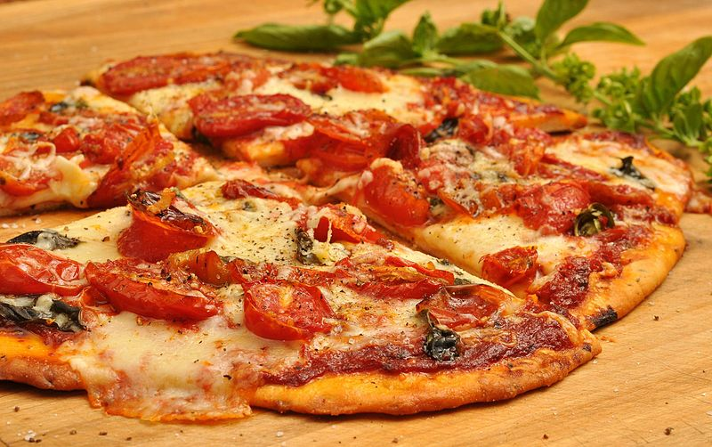

Pizza with tomato sauce
Pizza [ˈpittsa] is a flatbread generally topped with tomato sauce and cheese and baked in an oven. It is commonly topped with a selection of meats, vegetables and condiments. The term was first recorded in the 10th century, in a Latin manuscript from Gaeta in Central Italy. The modern pizza was invented in Naples, Italy, and the dish and its variants have since become popular in many areas of the world.
In 2009, upon Italy's request, Neapolitan pizza was safeguarded in the European Union as a Traditional Speciality Guaranteed dish. The Associazione Verace Pizza Napoletana (the True Neapolitan Pizza Association) is a non-profit organization founded in 1984 with headquarters in Naples. It promotes and protects the "true Neapolitan pizza".
Pizza is sold fresh, frozen or in portions. Various types of ovens are used to cook them and many varieties exist. Several similar dishes are prepared from ingredients commonly used in pizza preparation, such as calzone and stromboli.